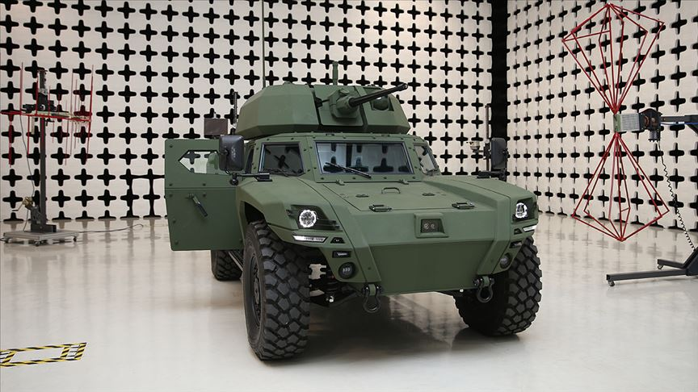
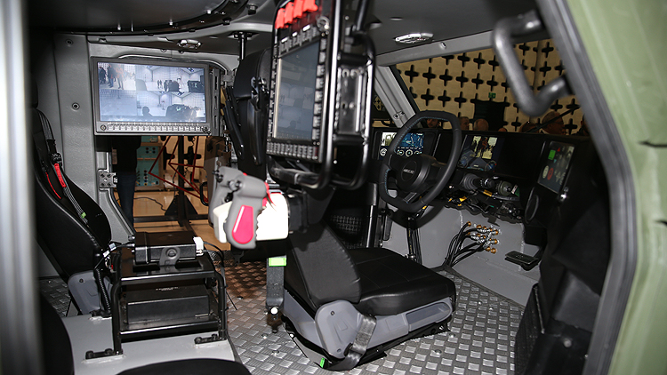
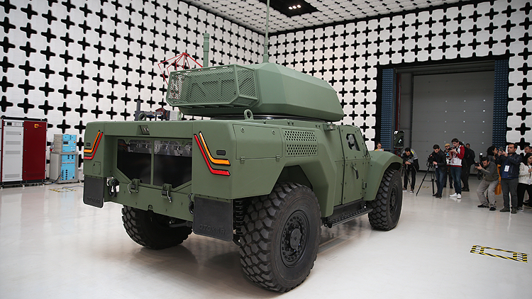

❮
❯
AKREP II, Otokar tarafından geliştirilen 4x4 tekerlekli zırhlı araç platformudur. Düşük siluetli yapısı, yüksek mayın koruması ve modüler silah entegrasyon kabiliyeti ile keşif, gözetleme, hava savunma, tanksavar ve ateş destek görevlerine uyarlanabilecek şekilde geliştirilmiştir.
Otokar broşürlerinde AKREP II’nin dizel, hibrit ve tamamen elektrikli güç seçenekleriyle sunulabildiği, bu sayede hareket kabiliyeti kadar akustik ve termal izin de azaltılabildiği belirtilmektedir.
Platform, orta kalibreden 90 mm’ye kadar farklı silah sistemleriyle donatılabilecek şekilde tasarlanmış, arka aks yönlendirme ve crab motion gibi gelişmiş hareket özellikleriyle öne çıkan yeni nesil bir araçtır.


